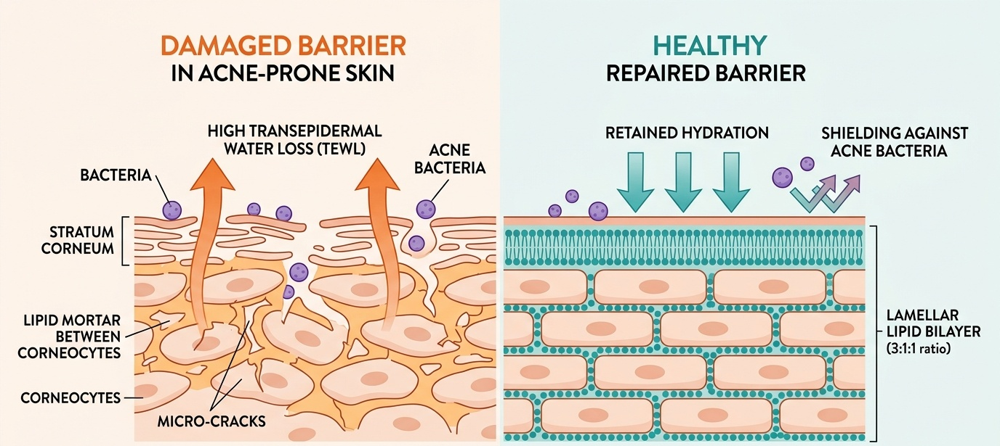
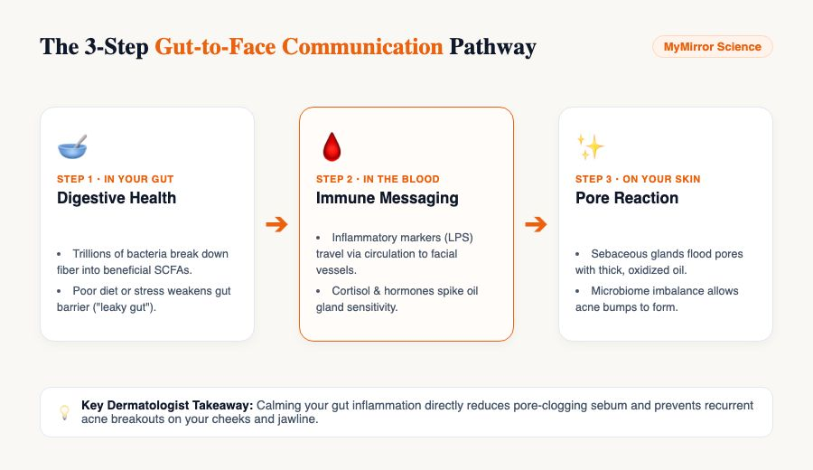
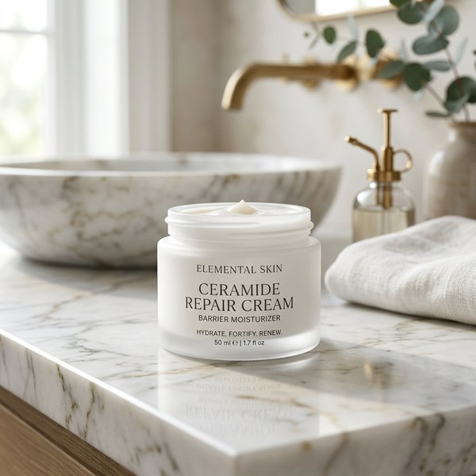
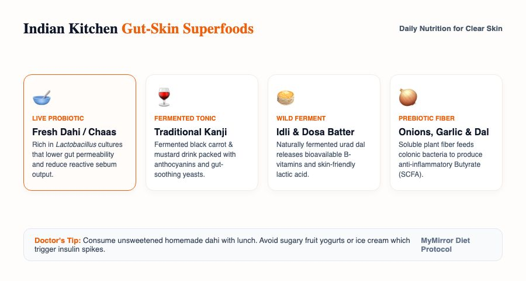

Microbiome 101: Your Skin's Invisible Security Team
Think of your facial skin not as a flat piece of plastic, but as a rich living rainforest. On every single square centimeter of your face, over 1.8 million micro-organisms live, breathe, and work. This ecosystem includes friendly bacteria, harmless yeasts, and microscopic helpers.
In a healthy state (called eubiosis), these microscopic helpers act as your personal security team:
- Physical Guard Duty: Friendly bacteria physically occupy every microscopic crevice around your hair follicles, leaving zero room for airborne pathogens or infectious germs to land and settle[1].
- The Acid Mantle Defense: Beneficial bacteria digest natural sebum lipids into gentle organic acids, keeping your skin surface slightly acidic at pH 4.8 to 5.5. Disease-causing bacteria cannot survive in this acidic environment[7].
- Natural Antimicrobial Shields: Guardian strains—specifically Staphylococcus epidermidis—release special antimicrobial peptides (such as 6-HAP and epidermin) that selectively suppress acne-causing clades before they form deep cysts[4].
- Immune Calming Signals: They send soothing chemical messages to your white blood cells, preventing your immune system from overreacting with swollen red nodules whenever a pore gets temporarily clogged.

The Gut-Skin Axis: How Your Stomach Signals Your Cheeks
Have you ever wondered why eating greasy fried pakoras, sugary sweets during festive seasons, or going through high-stress exam periods creates angry red pimples on your jawline within 48 hours?
It is not an old wives' tale; it is biology. It is called the gut-skin axis. Your intestinal lining and your facial skin develop from the exact same embryonic cell layers before you are born. Throughout your life, they remain in constant communication through your bloodstream, immune cells, and nervous system[2][3].

The 3 Steps That Cause Breakouts from Within:
- Step 1: The Irritated Gut: When you eat high-glycemic foods (refined maida, excess sugar) or experience chronic stress, the protective lining of your intestines weakens. Good bacteria die off, and gut permeability increases (often called "leaky gut").
- Step 2: Emergency Alarms in the Blood: Tiny bacterial fragments (lipopolysaccharides or LPS) pass from the gut into your bloodstream. Your immune system spots them and releases inflammatory signals across your entire body.
- Step 3: Oil Gland Explosion: When these signals reach your face, your sebaceous glands receive an urgent instruction: pump out oil to protect the barrier. The oil produced is thick, low in linoleic acid, and easily oxidized, creating the perfect feast for acne bacteria[5].
8-Point Self-Check: Is Microbiome Damage Causing Your Breakouts?
How do you know if your acne is just standard oily skin or if your microbiome has been stripped? Take this quick 60-second diagnostic check:
Check all symptoms that apply to your skin over the past 30 days:
5 Everyday Indian Habits That Secretly Destroy Your Flora
International skincare advice often overlooks the unique environmental and cultural realities of living in India. Here are the five biggest daily triggers that disrupt skin bacteria in Indian households:
| Indian Trigger | Impact on Skin Flora | Dermatologist Fix |
|---|---|---|
| 1. Hard Tap Water (TDS > 400) Bengaluru, Delhi NCR, Hyderabad, Jaipur |
High calcium and magnesium react with cleansers to leave an alkaline mineral scum. This pushes skin pH above 7.0, paralyzing healthy bacteria. | Use drinking-grade RO water for the final face splash, or attach an affordable tap filter to neutralize mineral salts. |
| 2. Heavy Hair Champi Oils Left Overnight | Coconut, mustard, or castor oil drips down onto the forehead, feeding lipophilic yeasts (Malassezia) and clogging pores. | Perform your hot oil scalp massage 45 minutes before showering. Never sleep with hair oil on your pillowcase. |
| 3. Squeaky-Clean "Dettol" or Bar Soaps | Traditional bath bars have an alkaline pH of 9.0 to 10.0. They dissolve stratum corneum lipid glue and kill protective flora. | Switch immediately to a soap-free, syndet bar or gel cleanser formulated at physiological pH 5.5. |
| 4. Overusing OTC Pharmacy Creams Betnovate, Panderm, or unprescribed Clindamycin |
Steroid creams thin the dermis, while long-term topical antibiotics breed resistant bacterial super-strains. | Stop steroid self-medication. Transition to non-antibiotic actives like Azelaic Acid that do not cause resistance. |
| 5. Monsoon Sweat Evaporation | High tropical humidity traps sweat and sodium crystals against the skin, shifting the ecosystem in favor of fungal breakouts. | Rinse face with plain cool water within 20 minutes of working out or commuting in humid weather. |
Actives Scorecard: Which Acne Treatments Help vs Hurt Your Flora?
You do not need to abandon active skincare ingredients to heal your microbiome. The secret is knowing which ingredients act like targeted scalpels and which ones act like nuclear weapons:
| Active Ingredient | Microbiome Impact | Rating | Clinical Optimization |
|---|---|---|---|
| Azelaic Acid (10% to 20%) | Selectively targets bad acne bacteria while leaving friendly guardian bacteria intact. Calms redness and fades brown marks (PIH). | ✓ Gold Standard | Ideal for daily morning or evening use. Does not cause bacterial resistance or sun sensitivity. |
| Niacinamide (2% to 5%) | Feeds the skin barrier by boosting natural ceramide production. Regulates excess sebum without stripping. | ✓ Excellent | Stick to gentle 2% to 5% formulas. High 10%–15% serums often trigger red flushing and tingling. |
| Salicylic Acid (1% to 2%) | Oil-soluble BHA that dissolves sebum plugs and breaks down bacterial sticky shields (biofilms). | ✓ Safe (Wash-off) | Best used 2 to 3 times a week in a foaming cleanser rather than a daily leave-on serum. |
| Adapalene (0.1% Retinoid) | Unclogs pores by normalizing cell shedding. Does not kill bacteria directly, keeping flora diverse. | ✓ Safe | Buffer over a lightweight ceramide moisturizer 2 to 3 nights a week to avoid peeling. |
| Benzoyl Peroxide (2.5%) | Releases oxygen radicals that kill anaerobic bacteria. Non-selective: kills good bacteria alongside bad ones. | ⚠ Caution | Use Short Contact Therapy (SCT): apply for 5–10 minutes on active pimples, then wash off. Never leave on overnight. |
| Topical Antibiotics (Clindamycin) | Induces rapid bacterial resistance when used alone. Bacteria mutate and return stronger. | ✗ High Risk | Never use clindamycin monotherapy for more than 8 weeks. Always pair with benzoyl peroxide to stop resistance. |
Top 4 Microbiome-Safe Products in India
These pharmacy and clinical products respect your skin's acid mantle and nourish the epidermal barrier without clogging pores:

- Preserves Flora: Non-foaming lotion removes dirt without stripping stratum corneum lipids.
- Physiological pH 5.5: Maintains the acid mantle so protective bacteria thrive.
- Zero Fragrance: No burning or stinging on compromised, active breakouts.

- True pH 5.5: Clinically proven to suppress acne-causing bacterial biofilms.
- 100% Water-Gel: Zero plant oils, heavy waxes, or fungal acne triggers.
- Hyaluronic & Panthenol: Soothes tightness without midday shine.

- Stops Bacterial Adhesion: Patented complex prevents harmful bacteria from binding to pores.
- Ultra-Fresh Texture: Sinks into skin instantly without a greasy film in humid weather.
- Calms Itching: Immediately reduces burning sensation from active peeling treatments.

- Repairs Tight Junctions: 3:1:1 ratio of Ceramides, Cholesterol, and Fatty Acids.
- Madecassoside (Cica): Strong anti-inflammatory action to calm deep cystic redness.
- Night Buffer: Perfect to apply after active acne treatments to prevent flaking.
How to Layer: The 4-Week Microbiome Reset Routine
If your skin is currently stinging, peeling, red, and erupting with recurrent pimples, follow this 4-week step-by-step restoration plan:
☀️ Morning Routine (Hydrate & Protect)
- Gentle Cleanse: Wash with a non-foaming lotion cleanser (Cetaphil) using lukewarm drinking water. Pat dry gently.
- Acid Mantle Gel: Apply a dime-sized amount of pH 5.5 care gel (Sebamed) while your face is still slightly damp.
- Broad-Spectrum Sunscreen: Finish with a matte, non-comedogenic SPF 50 sunscreen to shield against UV-induced lipid oxidation.
🌙 Evening Routine (Repair & Calm)
- Cleanse: Wash away pollution, sweat, and sunscreen residue with cool water.
- Targeted Active (Week 3+): Layer Azelaic Acid 10% every other night to clear bacteria without inducing resistance.
- Ceramide Seal: Apply a thin layer of physiological ceramide moisturizer to repair tight junctions overnight.
Diet & Nutrition: Indian Kitchen Superfoods for the Gut-Skin Axis
Treating the skin from the outside while feeding gut inflammation from the inside is an uphill battle. Incorporate traditional Indian culinary wisdom to support your internal microbiome:

| Indian Superfood | Key Active Flora / Nutrient | Clinical Skin Benefit |
|---|---|---|
| Fresh Dahi & Chaas (Buttermilk) | Live Lactobacillus bulgaricus cultures | Reinforces intestinal tight junctions and reduces reactive sebum output[6]. Consume with roasted jeera and black salt. |
| Traditional Fermented Kanji | Natural probiotic yeasts & anthocyanins | Winter fermented drink made from black carrots and mustard seeds; calms systemic gut inflammation. |
| Wild-Fermented Idli / Dosa Batter | Lactic acid bacteria & bioavailable B-complex | Slow fermentation of urad dal produces easy-to-digest nutrients that soothe digestive distress. |
| Soluble Prebiotic Fiber (Moong Dal, Onions, Garlic) | Prebiotic inulin & resistant starch | Feeds colonic bacteria to produce short-chain fatty acids (butyrate) that dampen facial erythema. |
Watch: Dermatologist Explains Skin Microbiome Repair
In this educational masterclass, board-certified dermatologist Dr. Andrea Dray explains the science of skin flora, why over-washing ruins your barrier, and how to restore balance:
Frequently Asked Questions
Does the skin microbiome actually cause acne or is it just a skincare trend?
It is proven clinical science, not a trend. Groundbreaking research from the National Institutes of Health (NIH) Human Microbiome Project demonstrated that people with clear skin and acne sufferers have roughly the same total amount of Cutibacterium acnes. The difference is ecological balance: clear skin has diverse, harmless strains and abundant Staphylococcus epidermidis, whereas acne skin is dominated by aggressive strains that form biofilms and trigger localized inflammation when the acid mantle is disrupted.
Can taking an oral probiotic capsule cure my acne on its own?
An oral probiotic supplement is a fantastic supporting tool, but not a standalone cure. Oral probiotics reduce gut permeability, prevent endotoxins from leaking into the blood, and lower systemic inflammation. However, they cannot physically dissolve an existing dead-cell-and-oil plug inside a facial pore. For best results, pair oral gut support with gentle topical care like Azelaic Acid or low-strength BHA.
Why is postbiotic skincare better than live probiotic skincare in India?
Live bacteria cannot survive transport in India's hot 35°C to 45°C summers, and cosmetic preservatives kill them inside the jar. Postbiotics (such as Bifida Ferment Lysate and Lactobacillus Ferment) are heat-stable bacterial extracts, cell-wall fragments, and enzymes. They deliver all the anti-inflammatory benefits to your skin cells without the risk of spoiling on the shelf.
I took oral antibiotics (doxycycline) for acne and my breakouts returned worse. Why?
This is a classic "antibiotic rebound." Broad-spectrum oral antibiotics wipe out both good and bad bacteria throughout your body, creating an empty biological vacuum. The bacteria that survive are often resistant strains that quickly overgrow. To recover, restore gut flora with probiotics and fermented foods, and switch topically to Azelaic Acid, which targets acne bacteria without causing resistance.
Does hard tap water in Indian cities really destroy facial skin flora?
Yes. Tap water in cities like Bengaluru, Delhi NCR, and Hyderabad often has high mineral hardness (TDS > 500 ppm). Calcium and magnesium bicarbonates leave an alkaline mineral film on your face, shifting your skin pH from its natural acidic 4.8 to above 7.0. This kills friendly bacteria and lets acne-causing clades flourish. Rinsing with drinking-grade RO water makes an immediate difference.
How does psychological stress trigger physical acne breakouts through the gut?
The gut-brain-skin axis is a real biochemical circuit. When you are stressed, your brain releases Corticotropin-Releasing Hormone (CRH), which slows stomach digestion and makes your gut lining permeable. Toxins slip into your blood, triggering cortisol spikes that stimulate facial oil glands to churn out thick, sticky sebum. This is why stress breakouts commonly appear as painful bumps along the chin and jawline.
Is fresh curd (dahi) good or bad for acne-prone skin?
Fresh, unsweetened homemade curd is beneficial. The fermentation process breaks down lactose and produces lactic acid bacteria that calm the gut. In contrast, commercial skimmed milk, sugary fruit yogurts, and whey protein isolate powders trigger spikes in Insulin-like Growth Factor-1 (IGF-1), which accelerates sebum production and worsens acne.
Peer-Reviewed Clinical References
-
[1]
Byrd AL, Belkaid Y, Segre JA. The human skin microbiome. Nat Rev Microbiol. 2018;16(3):143-155.
View Landmark Study on PubMed (PMID: 29332945) ↗ -
[2]
Salem I, Ramser A, Isham N, Ghannoum MA. The Gut Microbiome as a Major Regulator of the Gut-Skin Axis. Front Microbiol. 2018;9:1459.
View Study on PubMed (PMID: 30008682) ↗ -
[3]
O'Neill CA, et al. The gut-skin axis in health and disease: A marker with therapeutic potential. Bioessays. 2016;38(11):1167-1176.
View Review on PubMed (PMID: 27581848) ↗ -
[4]
Dréno B, et al. Microbiome in healthy skin, update for dermatologists. J Eur Acad Dermatol Venereol. 2016;30(12):2038-2047.
View Study on PubMed (PMID: 27734568) ↗ -
[5]
Fitz-Gibbon S, et al. Investigating the skin microbiome in acne: genomic analysis of Cutibacterium acnes strains. J Invest Dermatol. 2013;133(9):2152-2160.
View Study on PubMed (PMID: 23337890) ↗ -
[6]
Jung GW, et al. Prospective, randomized, open-label trial of oral probiotics for acne. Benef Microbes. 2013;4(2):167-174.
View Consensus on PubMed (PMID: 23689366) ↗ -
[7]
Schmid-Wendtner MH, Korting HC. The pH of the skin surface and its physiological importance. Skin Pharmacol Physiol. 2006;19(6):296-302.
View Guidelines on PubMed (PMID: 16864974) ↗